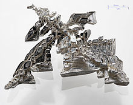

Silver
| 
Electrolytically refined silver
|
|||||||||||||||||||||||||||||||||||||||||||||||||||||||||||||||||||||||||||||||||||||||||||||||||||||||||||||||||||||||||||||||||||||||||||||||||||||||||||||||||||||||||||||||||||||||||||||||||||||||||||||||||||||||||||||||||||||
| General properties | |||||||||||||||||||||||||||||||||||||||||||||||||||||||||||||||||||||||||||||||||||||||||||||||||||||||||||||||||||||||||||||||||||||||||||||||||||||||||||||||||||||||||||||||||||||||||||||||||||||||||||||||||||||||||||||||||||||
|---|---|---|---|---|---|---|---|---|---|---|---|---|---|---|---|---|---|---|---|---|---|---|---|---|---|---|---|---|---|---|---|---|---|---|---|---|---|---|---|---|---|---|---|---|---|---|---|---|---|---|---|---|---|---|---|---|---|---|---|---|---|---|---|---|---|---|---|---|---|---|---|---|---|---|---|---|---|---|---|---|---|---|---|---|---|---|---|---|---|---|---|---|---|---|---|---|---|---|---|---|---|---|---|---|---|---|---|---|---|---|---|---|---|---|---|---|---|---|---|---|---|---|---|---|---|---|---|---|---|---|---|---|---|---|---|---|---|---|---|---|---|---|---|---|---|---|---|---|---|---|---|---|---|---|---|---|---|---|---|---|---|---|---|---|---|---|---|---|---|---|---|---|---|---|---|---|---|---|---|---|---|---|---|---|---|---|---|---|---|---|---|---|---|---|---|---|---|---|---|---|---|---|---|---|---|---|---|---|---|---|---|---|---|---|---|---|---|---|---|---|---|---|---|---|---|---|---|---|---|
| Name, symbol | silver, Ag | ||||||||||||||||||||||||||||||||||||||||||||||||||||||||||||||||||||||||||||||||||||||||||||||||||||||||||||||||||||||||||||||||||||||||||||||||||||||||||||||||||||||||||||||||||||||||||||||||||||||||||||||||||||||||||||||||||||
| Pronunciation | /ˈsɪlvər/ SIL-vər |
||||||||||||||||||||||||||||||||||||||||||||||||||||||||||||||||||||||||||||||||||||||||||||||||||||||||||||||||||||||||||||||||||||||||||||||||||||||||||||||||||||||||||||||||||||||||||||||||||||||||||||||||||||||||||||||||||||
| Appearance | lustrous white metal | ||||||||||||||||||||||||||||||||||||||||||||||||||||||||||||||||||||||||||||||||||||||||||||||||||||||||||||||||||||||||||||||||||||||||||||||||||||||||||||||||||||||||||||||||||||||||||||||||||||||||||||||||||||||||||||||||||||
| Silver in the periodic table | |||||||||||||||||||||||||||||||||||||||||||||||||||||||||||||||||||||||||||||||||||||||||||||||||||||||||||||||||||||||||||||||||||||||||||||||||||||||||||||||||||||||||||||||||||||||||||||||||||||||||||||||||||||||||||||||||||||
|
|||||||||||||||||||||||||||||||||||||||||||||||||||||||||||||||||||||||||||||||||||||||||||||||||||||||||||||||||||||||||||||||||||||||||||||||||||||||||||||||||||||||||||||||||||||||||||||||||||||||||||||||||||||||||||||||||||||
| Atomic number | 47 | ||||||||||||||||||||||||||||||||||||||||||||||||||||||||||||||||||||||||||||||||||||||||||||||||||||||||||||||||||||||||||||||||||||||||||||||||||||||||||||||||||||||||||||||||||||||||||||||||||||||||||||||||||||||||||||||||||||
| Standard atomic weight (±) | 107.8682(2)[1] | ||||||||||||||||||||||||||||||||||||||||||||||||||||||||||||||||||||||||||||||||||||||||||||||||||||||||||||||||||||||||||||||||||||||||||||||||||||||||||||||||||||||||||||||||||||||||||||||||||||||||||||||||||||||||||||||||||||
| Element category | transition metal | ||||||||||||||||||||||||||||||||||||||||||||||||||||||||||||||||||||||||||||||||||||||||||||||||||||||||||||||||||||||||||||||||||||||||||||||||||||||||||||||||||||||||||||||||||||||||||||||||||||||||||||||||||||||||||||||||||||
| Group, block | group 11, d-block | ||||||||||||||||||||||||||||||||||||||||||||||||||||||||||||||||||||||||||||||||||||||||||||||||||||||||||||||||||||||||||||||||||||||||||||||||||||||||||||||||||||||||||||||||||||||||||||||||||||||||||||||||||||||||||||||||||||
| Period | period 5 | ||||||||||||||||||||||||||||||||||||||||||||||||||||||||||||||||||||||||||||||||||||||||||||||||||||||||||||||||||||||||||||||||||||||||||||||||||||||||||||||||||||||||||||||||||||||||||||||||||||||||||||||||||||||||||||||||||||
| Electron configuration | [Kr] 4d10 5s1 | ||||||||||||||||||||||||||||||||||||||||||||||||||||||||||||||||||||||||||||||||||||||||||||||||||||||||||||||||||||||||||||||||||||||||||||||||||||||||||||||||||||||||||||||||||||||||||||||||||||||||||||||||||||||||||||||||||||
| per shell | 2, 8, 18, 18, 1 | ||||||||||||||||||||||||||||||||||||||||||||||||||||||||||||||||||||||||||||||||||||||||||||||||||||||||||||||||||||||||||||||||||||||||||||||||||||||||||||||||||||||||||||||||||||||||||||||||||||||||||||||||||||||||||||||||||||
| Physical properties | |||||||||||||||||||||||||||||||||||||||||||||||||||||||||||||||||||||||||||||||||||||||||||||||||||||||||||||||||||||||||||||||||||||||||||||||||||||||||||||||||||||||||||||||||||||||||||||||||||||||||||||||||||||||||||||||||||||
| Phase | solid | ||||||||||||||||||||||||||||||||||||||||||||||||||||||||||||||||||||||||||||||||||||||||||||||||||||||||||||||||||||||||||||||||||||||||||||||||||||||||||||||||||||||||||||||||||||||||||||||||||||||||||||||||||||||||||||||||||||
| Melting point | 1234.93 K (961.78 °C, 1763.2 °F) | ||||||||||||||||||||||||||||||||||||||||||||||||||||||||||||||||||||||||||||||||||||||||||||||||||||||||||||||||||||||||||||||||||||||||||||||||||||||||||||||||||||||||||||||||||||||||||||||||||||||||||||||||||||||||||||||||||||
| Boiling point | 2435 K (2162 °C, 3924 °F) | ||||||||||||||||||||||||||||||||||||||||||||||||||||||||||||||||||||||||||||||||||||||||||||||||||||||||||||||||||||||||||||||||||||||||||||||||||||||||||||||||||||||||||||||||||||||||||||||||||||||||||||||||||||||||||||||||||||
| Density near r.t. | 10.49 g·cm−3 | ||||||||||||||||||||||||||||||||||||||||||||||||||||||||||||||||||||||||||||||||||||||||||||||||||||||||||||||||||||||||||||||||||||||||||||||||||||||||||||||||||||||||||||||||||||||||||||||||||||||||||||||||||||||||||||||||||||
| when liquid, at m.p. | 9.320 g·cm−3 | ||||||||||||||||||||||||||||||||||||||||||||||||||||||||||||||||||||||||||||||||||||||||||||||||||||||||||||||||||||||||||||||||||||||||||||||||||||||||||||||||||||||||||||||||||||||||||||||||||||||||||||||||||||||||||||||||||||
| Heat of fusion | 11.28 kJ·mol−1 | ||||||||||||||||||||||||||||||||||||||||||||||||||||||||||||||||||||||||||||||||||||||||||||||||||||||||||||||||||||||||||||||||||||||||||||||||||||||||||||||||||||||||||||||||||||||||||||||||||||||||||||||||||||||||||||||||||||
| Heat of vaporization | 254 kJ·mol−1 | ||||||||||||||||||||||||||||||||||||||||||||||||||||||||||||||||||||||||||||||||||||||||||||||||||||||||||||||||||||||||||||||||||||||||||||||||||||||||||||||||||||||||||||||||||||||||||||||||||||||||||||||||||||||||||||||||||||
| Molar heat capacity | 25.350 J·mol−1·K−1 | ||||||||||||||||||||||||||||||||||||||||||||||||||||||||||||||||||||||||||||||||||||||||||||||||||||||||||||||||||||||||||||||||||||||||||||||||||||||||||||||||||||||||||||||||||||||||||||||||||||||||||||||||||||||||||||||||||||
vapor pressure
|
|||||||||||||||||||||||||||||||||||||||||||||||||||||||||||||||||||||||||||||||||||||||||||||||||||||||||||||||||||||||||||||||||||||||||||||||||||||||||||||||||||||||||||||||||||||||||||||||||||||||||||||||||||||||||||||||||||||
| Atomic properties | |||||||||||||||||||||||||||||||||||||||||||||||||||||||||||||||||||||||||||||||||||||||||||||||||||||||||||||||||||||||||||||||||||||||||||||||||||||||||||||||||||||||||||||||||||||||||||||||||||||||||||||||||||||||||||||||||||||
| Oxidation states | 1, 2, 3 (an amphoteric oxide) | ||||||||||||||||||||||||||||||||||||||||||||||||||||||||||||||||||||||||||||||||||||||||||||||||||||||||||||||||||||||||||||||||||||||||||||||||||||||||||||||||||||||||||||||||||||||||||||||||||||||||||||||||||||||||||||||||||||
| Electronegativity | Pauling scale: 1.93 | ||||||||||||||||||||||||||||||||||||||||||||||||||||||||||||||||||||||||||||||||||||||||||||||||||||||||||||||||||||||||||||||||||||||||||||||||||||||||||||||||||||||||||||||||||||||||||||||||||||||||||||||||||||||||||||||||||||
| Ionization energies | 1st: 731.0 kJ·mol−1 2nd: 2070 kJ·mol−1 3rd: 3361 kJ·mol−1 |
||||||||||||||||||||||||||||||||||||||||||||||||||||||||||||||||||||||||||||||||||||||||||||||||||||||||||||||||||||||||||||||||||||||||||||||||||||||||||||||||||||||||||||||||||||||||||||||||||||||||||||||||||||||||||||||||||||
| Atomic radius | empirical: 144 pm | ||||||||||||||||||||||||||||||||||||||||||||||||||||||||||||||||||||||||||||||||||||||||||||||||||||||||||||||||||||||||||||||||||||||||||||||||||||||||||||||||||||||||||||||||||||||||||||||||||||||||||||||||||||||||||||||||||||
| Covalent radius | 145±5 pm | ||||||||||||||||||||||||||||||||||||||||||||||||||||||||||||||||||||||||||||||||||||||||||||||||||||||||||||||||||||||||||||||||||||||||||||||||||||||||||||||||||||||||||||||||||||||||||||||||||||||||||||||||||||||||||||||||||||
| Van der Waals radius | 172 pm | ||||||||||||||||||||||||||||||||||||||||||||||||||||||||||||||||||||||||||||||||||||||||||||||||||||||||||||||||||||||||||||||||||||||||||||||||||||||||||||||||||||||||||||||||||||||||||||||||||||||||||||||||||||||||||||||||||||
| Miscellanea | |||||||||||||||||||||||||||||||||||||||||||||||||||||||||||||||||||||||||||||||||||||||||||||||||||||||||||||||||||||||||||||||||||||||||||||||||||||||||||||||||||||||||||||||||||||||||||||||||||||||||||||||||||||||||||||||||||||
| Crystal structure | face-centered cubic (fcc)
 |
||||||||||||||||||||||||||||||||||||||||||||||||||||||||||||||||||||||||||||||||||||||||||||||||||||||||||||||||||||||||||||||||||||||||||||||||||||||||||||||||||||||||||||||||||||||||||||||||||||||||||||||||||||||||||||||||||||
| Speed of sound thin rod | 2680 m·s−1 (at r.t.) | ||||||||||||||||||||||||||||||||||||||||||||||||||||||||||||||||||||||||||||||||||||||||||||||||||||||||||||||||||||||||||||||||||||||||||||||||||||||||||||||||||||||||||||||||||||||||||||||||||||||||||||||||||||||||||||||||||||
| Thermal expansion | 18.9 µm·m−1·K−1 (at 25 °C) | ||||||||||||||||||||||||||||||||||||||||||||||||||||||||||||||||||||||||||||||||||||||||||||||||||||||||||||||||||||||||||||||||||||||||||||||||||||||||||||||||||||||||||||||||||||||||||||||||||||||||||||||||||||||||||||||||||||
| Thermal conductivity | 429 W·m−1·K−1 | ||||||||||||||||||||||||||||||||||||||||||||||||||||||||||||||||||||||||||||||||||||||||||||||||||||||||||||||||||||||||||||||||||||||||||||||||||||||||||||||||||||||||||||||||||||||||||||||||||||||||||||||||||||||||||||||||||||
| Thermal diffusivity | 174 mm2·s−1 (at 300 K) | ||||||||||||||||||||||||||||||||||||||||||||||||||||||||||||||||||||||||||||||||||||||||||||||||||||||||||||||||||||||||||||||||||||||||||||||||||||||||||||||||||||||||||||||||||||||||||||||||||||||||||||||||||||||||||||||||||||
| Electrical resistivity | 15.87 nΩ·m (at 20 °C) | ||||||||||||||||||||||||||||||||||||||||||||||||||||||||||||||||||||||||||||||||||||||||||||||||||||||||||||||||||||||||||||||||||||||||||||||||||||||||||||||||||||||||||||||||||||||||||||||||||||||||||||||||||||||||||||||||||||
| Magnetic ordering | diamagnetic[2] | ||||||||||||||||||||||||||||||||||||||||||||||||||||||||||||||||||||||||||||||||||||||||||||||||||||||||||||||||||||||||||||||||||||||||||||||||||||||||||||||||||||||||||||||||||||||||||||||||||||||||||||||||||||||||||||||||||||
| Young's modulus | 83 GPa | ||||||||||||||||||||||||||||||||||||||||||||||||||||||||||||||||||||||||||||||||||||||||||||||||||||||||||||||||||||||||||||||||||||||||||||||||||||||||||||||||||||||||||||||||||||||||||||||||||||||||||||||||||||||||||||||||||||
| Shear modulus | 30 GPa | ||||||||||||||||||||||||||||||||||||||||||||||||||||||||||||||||||||||||||||||||||||||||||||||||||||||||||||||||||||||||||||||||||||||||||||||||||||||||||||||||||||||||||||||||||||||||||||||||||||||||||||||||||||||||||||||||||||
| Bulk modulus | 100 GPa | ||||||||||||||||||||||||||||||||||||||||||||||||||||||||||||||||||||||||||||||||||||||||||||||||||||||||||||||||||||||||||||||||||||||||||||||||||||||||||||||||||||||||||||||||||||||||||||||||||||||||||||||||||||||||||||||||||||
| Poisson ratio | 0.37 | ||||||||||||||||||||||||||||||||||||||||||||||||||||||||||||||||||||||||||||||||||||||||||||||||||||||||||||||||||||||||||||||||||||||||||||||||||||||||||||||||||||||||||||||||||||||||||||||||||||||||||||||||||||||||||||||||||||
| Mohs hardness | 2.5 | ||||||||||||||||||||||||||||||||||||||||||||||||||||||||||||||||||||||||||||||||||||||||||||||||||||||||||||||||||||||||||||||||||||||||||||||||||||||||||||||||||||||||||||||||||||||||||||||||||||||||||||||||||||||||||||||||||||
| Vickers hardness | 251 MPa | ||||||||||||||||||||||||||||||||||||||||||||||||||||||||||||||||||||||||||||||||||||||||||||||||||||||||||||||||||||||||||||||||||||||||||||||||||||||||||||||||||||||||||||||||||||||||||||||||||||||||||||||||||||||||||||||||||||
| Brinell hardness | 206-250 MPa | ||||||||||||||||||||||||||||||||||||||||||||||||||||||||||||||||||||||||||||||||||||||||||||||||||||||||||||||||||||||||||||||||||||||||||||||||||||||||||||||||||||||||||||||||||||||||||||||||||||||||||||||||||||||||||||||||||||
| CAS Registry Number | 7440-22-4 | ||||||||||||||||||||||||||||||||||||||||||||||||||||||||||||||||||||||||||||||||||||||||||||||||||||||||||||||||||||||||||||||||||||||||||||||||||||||||||||||||||||||||||||||||||||||||||||||||||||||||||||||||||||||||||||||||||||
| History | |||||||||||||||||||||||||||||||||||||||||||||||||||||||||||||||||||||||||||||||||||||||||||||||||||||||||||||||||||||||||||||||||||||||||||||||||||||||||||||||||||||||||||||||||||||||||||||||||||||||||||||||||||||||||||||||||||||
| Discovery | before 5000 BC | ||||||||||||||||||||||||||||||||||||||||||||||||||||||||||||||||||||||||||||||||||||||||||||||||||||||||||||||||||||||||||||||||||||||||||||||||||||||||||||||||||||||||||||||||||||||||||||||||||||||||||||||||||||||||||||||||||||
| Most stable isotopes | |||||||||||||||||||||||||||||||||||||||||||||||||||||||||||||||||||||||||||||||||||||||||||||||||||||||||||||||||||||||||||||||||||||||||||||||||||||||||||||||||||||||||||||||||||||||||||||||||||||||||||||||||||||||||||||||||||||
|
|||||||||||||||||||||||||||||||||||||||||||||||||||||||||||||||||||||||||||||||||||||||||||||||||||||||||||||||||||||||||||||||||||||||||||||||||||||||||||||||||||||||||||||||||||||||||||||||||||||||||||||||||||||||||||||||||||||
| Decay modes in parentheses are predicted, but have not yet been observed | |||||||||||||||||||||||||||||||||||||||||||||||||||||||||||||||||||||||||||||||||||||||||||||||||||||||||||||||||||||||||||||||||||||||||||||||||||||||||||||||||||||||||||||||||||||||||||||||||||||||||||||||||||||||||||||||||||||
{kind=link}
Silver is a chemical element with symbol Ag (Greek: άργυρος árguros, Latin: argentum, both from the Indo-European root *h₂erǵ- for "grey" or "shining") and atomic number 47. A soft, white, lustrous transition metal, it possesses the highest electrical conductivity, thermal conductivity and reflectivity of any metal. The metal occurs naturally in its pure, free form (native silver), as an alloy with gold and other metals, and in minerals such as argentite and chlorargyrite. Most silver is produced as a byproduct of copper, gold, lead, and zinc refining.
Silver has long been valued as a precious metal. More abundant than gold, silver metal has in many premodern monetary systems functioned as coinable specie, sometimes even alongside gold. In addition, silver has numerous applications beyond currency, such as in solar panels, water filtration, jewelry and ornaments, high-value tableware and utensils (hence the term silverware), and also as an investment in the forms of coins and bullion. Silver is used industrially in electrical contacts and conductors, in specialized mirrors, window coatings and in catalysis of chemical reactions. Its compounds are used in photographic film and X-rays. Dilute silver nitrate solutions and other silver compounds are used as disinfectants and microbiocides (oligodynamic effect), added to bandages and wound-dressings, catheters and other medical instruments.
Contents
[hide]Characteristics[edit]
{kind=link}
Silver is produced during certain types of supernova explosions by nucleosynthesis from lighter elements through the r-process, a form of nuclear fusion that produces many elements heavier than iron, of which silver is one.[3]
Silver is a very ductile, malleable (slightly less so than gold), univalent coinage metal, with a brilliant white metallic luster that can take a high degree of polish.[4] Protected silver has higher optical reflectivity than aluminium at all wavelengths longer than ~450 nm.[5] At wavelengths shorter than 450 nm, silver's reflectivity is inferior to that of aluminium and drops to zero near 310 nm.[6]
The electrical conductivity of silver is the highest of all metals, even higher than copper, but its greater cost has prevented it from being widely used in place of copper for electrical purposes. An exception to this is in radio-frequency engineering, particularly at VHF and higher frequencies, where silver plating is employed to improve electrical conductivity of parts, including wires. Silver also has the lowest contact resistance of any metal.[citation needed] During World War II in the US, 13,540 tons were used in the electromagnets used for enriching uranium, mainly because of the wartime shortage of copper.[7][8][9]
Pure silver has the highest thermal conductivity of any metal, although that of the nonmetal carbon in the form of diamond and superfluid helium II are higher.[citation needed]
Silver halides are photosensitive and are remarkable for their ability to record a latent image that can later be developed chemically. Silver is stable in pure air and water, but tarnishes when it is exposed to air or water containing ozone or hydrogen sulfide, the latter forming a black layer of silver sulfide which can be cleaned off with dilute hydrochloric acid.[10] The most common oxidation state of silver is +1 (for example, silver nitrate, AgNO3); the less common +2 compounds (for example, silver(II) fluoride, AgF2), and the even less common +3 (for example, potassium tetrafluoroargentate(III), KAgF4) and even +4 compounds (for example, potassium hexafluoroargentate(IV), K2AgF6)[11] are also known.
Isotopes[edit]
Naturally occurring silver is composed of two stable isotopes, 107Ag and 109Ag, with 107Ag being slightly more abundant (51.839% natural abundance). Their almost equal abundance is rare in the periodic table. Silver's atomic weight is 107.8682(2) g/mol.[12][13]
Twenty-eight radioisotopes have been characterized, the most stable being 105Ag with a half-life of 41.29 days, 111Ag with a half-life of 7.45 days, and 112Ag with a half-life of 3.13 hours. This element has numerous meta states, the most stable being 108mAg (t1/2 = 418 years), 110mAg (t1/2 = 249.79 days) and 106mAg (t1/2 = 8.28 days). All of the remaining radioactive isotopes have half-lives of less than an hour, and the majority of these have half-lives of less than three minutes.
Isotopes of silver range in relative atomic mass from 93.943 (94Ag) to 126.936 (127Ag);[14] the primary decay mode before the most abundant stable isotope, 107Ag, is electron capture and the primary mode after is beta decay. The primary decay products before 107Ag are palladium (element 46) isotopes, and the primary products after are cadmium (element 48) isotopes.
The palladium isotope 107Pd decays by beta emission to 107Ag with a half-life of 6.5 million years. Iron meteorites are the only objects with a high-enough palladium-to-silver ratio to yield measurable variations in 107Ag abundance. Radiogenic 107Ag was first discovered in the Santa Clara meteorite in 1978.[15] The discoverers suggest the coalescence and differentiation of iron-cored small planets may have occurred 10 million years after a nucleosynthetic event. 107Pd–107Ag correlations observed in bodies that have clearly been melted since the accretion of the solar system must reflect the presence of unstable nuclides in the early solar system.[16]
Compounds[edit]
Silver metal dissolves readily in nitric acid (HNO
3) to produce silver nitrate (AgNO
3), a transparent crystalline solid that is photosensitive
and readily soluble in water. Silver nitrate is used as the starting
point for the synthesis of many other silver compounds, as an antiseptic, and as a yellow stain for glass in stained glass. Silver metal does not react with sulfuric acid, which is used in jewelry-making to clean and remove copper oxide firescale from silver articles after silver soldering or annealing. Silver reacts readily with sulfur or hydrogen sulfide H
2S to produce silver sulfide, a dark-colored compound familiar as the tarnish on silver coins and other objects. Silver sulfide Ag
2S also forms silver whiskers when silver electrical contacts are used in an atmosphere rich in hydrogen sulfide.
- 4 Ag + O2 + 2 H2S → 2 Ag2S + 2 H2O
{kind=link}
Silver chloride (AgCl) is precipitated from solutions of silver nitrate in the presence of chloride ions, and the other silver halides used in the manufacture of photographic emulsions are made in the same way, using bromide or iodide salts. Silver chloride is used in glass electrodes for pH testing and potentiometric measurement, and as a transparent cement for glass. Silver iodide has been used in attempts to seed clouds to produce rain.[10] Silver halides are highly insoluble in aqueous solutions and are used in gravimetric analytical methods.
Silver oxide (Ag
2O), produced when silver nitrate solutions are treated with a base, is used as a positive electrode (anode) in watch batteries. Silver carbonate (Ag
2CO
3) is precipitated when silver nitrate is treated with sodium carbonate (Na
2CO
3).[17]
- 2 AgNO3 + 2 OH− → Ag2O + H2O + 2 NO3−
- 2 AgNO3 + Na2CO3 → Ag2CO3 + 2 NaNO3
Silver fulminate (AgONC), a powerful, touch-sensitive explosive used in percussion caps, is made by reaction of silver metal with nitric acid in the presence of ethanol (C
2H
5OH). Other dangerously explosive silver compounds are silver azide (AgN
3), formed by reaction of silver nitrate with sodium azide (NaN
3),[18] and silver acetylide, formed when silver reacts with acetylene gas.
Latent images formed in silver halide crystals are developed by treatment with alkaline solutions of reducing agents such as hydroquinone, metol (4-(methylamino)phenol sulfate) or ascorbate, which reduce the exposed halide to silver metal. Alkaline solutions of silver nitrate can be reduced to silver metal by reducing sugars such as glucose, and this reaction is used to silver glass mirrors and the interior of glass Christmas ornaments. Silver halides are soluble in solutions of sodium thiosulfate (Na
2S
2O
3) which is used as a photographic fixer, to remove excess silver halide from photographic emulsions after image development.[17]
Silver metal is attacked by strong oxidizers such as potassium permanganate (KMnO
4) and potassium dichromate (K
2Cr
2O
7), and in the presence of potassium bromide (KBr); these compounds are used in photography to bleach silver images, converting them to silver halides that can either be fixed with thiosulfate or redeveloped to intensify the original image. Silver forms cyanide complexes (silver cyanide) that are soluble in water in the presence of an excess of cyanide ions. Silver cyanide solutions are used in electroplating of silver.[17]
Although silver normally has oxidation state +1 in compounds, other oxidation states are known, such as +3 in AgF
3, produced by the reaction of elemental silver or silver fluoride with krypton difluoride.[19]
Silver artifacts primarily under go three forms of deterioration. Silver sulfide tarnish is the most common form of silver degradation. Fresh silver chloride is pale yellow colored, becoming purplish on exposure to light and projects slightly from the surface of the artifact or coin. The precipitation of copper in ancient silver can be used to date artifacts.[20]
Applications[edit]
Many well-known uses of silver involve its precious metal properties, including currency, decorative items, and mirrors. The contrast between its bright white color and other media makes it very useful to the visual arts. By contrast, fine silver particles form the dense black in photographs and in silverpoint drawings. It has also long been used to confer high monetary value as objects (such as silver coins and investment bars) or make objects symbolic of high social or political rank. Silver salts have been used since the Middle Ages to produce a yellow or orange colors to stained glass, and more complex decorative color reactions can be produced by incorporating silver metal in blown, kilnformed or torchworked glass.[21]
Currency[edit]
Silver, in the form of electrum (a gold–silver alloy), was coined to produce money around 700 BC by the Lydians. Later, silver was refined and coined in its pure form. Many nations used silver as the basic unit of monetary value. In the modern world, silver bullion has the ISO currency code XAG. The name of the pound sterling (£) reflects the fact it originally represented the value of one pound Tower weight of sterling silver; other historical currencies, such as the French livre, have similar etymologies. During the 19th century, the bimetallism that prevailed in most countries was undermined by the discovery of large deposits of silver in the Americas; fearing a sharp decrease in the value of silver and thus the currency, most states switched to a gold standard by 1900. In some languages, such as Sanskrit, Spanish, French, and Hebrew, the same word means both silver and money.
The 20th century saw a gradual movement to fiat currency, with most of the world monetary system losing its link to precious metals after Richard Nixon took the United States dollar off the gold standard in 1971; the last currency backed by gold was the Swiss franc, which became a pure fiat currency on 1 May 2000. During this same period, silver gradually ceased to be used in circulating coins. In 1964, the United States stopped minting their silver dime and quarter. They minted their last circulating silver coin in 1970 in its 40% half-dollar.[22]
In 1968, Canada minted their last circulating silver coins which were the 50% dime and the 50% quarter. The Royal Canadian Mint still makes many collectible silver coins with various dollar denominations. In addition to Canada, the United States and many other countries continue to mint silver coins that are collected for their bullion and numismatic value. The U.S. coin is known as the "Silver Eagle".
Silver is used as a currency by many individuals, and is legal tender in the US state of Utah.[23] Silver coins and bullion are also used as an investment to guard against inflation and devaluation.
Jewelry and silverware[edit]
{kind=link}
{kind=link}
Jewelry and silverware are traditionally made from sterling silver (standard silver), an alloy of 92.5% silver with 7.5% copper. In the US, only an alloy consisting of at least 90.0% fine silver can be marketed as "silver" (thus frequently stamped 900). Sterling silver (stamped 925) is harder than pure silver, and has a lower melting point (893 °C) than either pure silver or pure copper.[10] Britannia silver is an alternative, hallmark-quality standard containing 95.8% silver, often used to make silver tableware and wrought plate. With the addition of germanium, the patented modified alloy Argentium sterling silver is formed, with improved properties, including resistance to firescale.
Sterling silver jewelry is often plated with a thin coat of .999 fine silver to give the item a shiny finish. This process is called "flashing". Silver jewelry can also be plated with rhodium (for a bright, shiny look) or gold (to produce silver gilt).
Silver is a constituent of almost all colored carat gold alloys and carat gold solders, giving the alloys paler color and greater hardness.[24] White 9 carat gold contains 62.5% silver and 37.5% gold, while 22 carat gold contains a minimum of 91.7% gold and 8.3% silver or copper or other metals.[24]
Historically, the training and guild organization of goldsmiths included silversmiths, as well, and the two crafts remain largely overlapping. Unlike blacksmiths, silversmiths do not shape the metal while it is red-hot, but instead, work it at room temperature with gentle and carefully placed hammer blows. The essence of silversmithing is to take a flat piece of metal and to transform it into a useful object using different hammers, stakes and other simple tools.[25]
While silversmiths specialize in, and principally work silver, they also work with other metals, such as gold, copper, steel, and brass. They make jewelry, silverware, armor, vases, and other artistic items. Because silver is such a malleable metal, silversmiths have a large range of choices with how they prefer to work the metal. Historically, silversmiths are mostly referred to as goldsmiths, which was usually the same guild. In the western Canadian silversmith tradition, guilds do not exist; however, mentoring through colleagues becomes a method of professional learning within a community of craftspeople.[26]
Traditionally, silversmiths mostly made "silverware" (cutlery, tableware, bowls, candlesticks and such). Only in more recent times has silversmithing become mainly work in jewelry, as much less solid silver tableware is now handmade.
Solar energy[edit]
{kind=link}
Silver is used in the manufacture of crystalline solar photovoltaic panels.[27] Silver is also used in plasmonic solar cells. 100 million ounces of silver are projected for use by solar energy in 2015.[28]
Silver is the reflective coating of choice for concentrated solar power reflectors.[29] In 2009, scientists at the National Renewable Energy Laboratory (NREL) and SkyFuel teamed to develop large curved sheets of metal that have the potential to be 30% less expensive than today's best collectors of concentrated solar power by replacing glass-based models with a silver polymer sheet that has the same performance as the heavy glass mirrors, but at much lower cost and weight. It also is much easier to deploy and install. The glossy film uses several layers of polymers, with an inner layer of pure silver.
Air conditioning[edit]
In 2014 researchers invented a mirror-like panel that, when mounted on a building, acts like an air conditioner.[30] The mirror is built from several layers of wafer-thin materials. The first layer is silver, the most reflective substance on Earth. On top of this are alternating layers of silicon dioxide and hafnium oxide. These layers improve the reflectivity, but also turn the mirror into a thermal radiator.
Water purification[edit]
Silver is used in water purifiers. It prevents bacteria and algae from building up in filters. The catalytic action of silver, in concert with oxygen, sanitizes water and eliminates the need for chlorine. Silver ions are also added to water purification systems in hospitals, community water systems, pools and spas, displacing chlorine.[28]
Dentistry[edit]
Silver can be alloyed with mercury at room temperature to make amalgams that are widely used for dental fillings. To make dental amalgam, a mixture of powdered silver and other metals such as tin and gold is mixed with mercury to make a stiff paste that can be adapted to the shape of a cavity. The dental amalgam achieves initial hardness within minutes, and sets hard in a few hours.
Photography and electronics[edit]
The use of silver in photography, in the form of silver nitrate and silver halides, has rapidly declined due to the lower demand for consumer color film from the advent of digital technology. From the peak global demand for photographic silver in 1999 (267,000,000 troy ounces or 8304.6 metric tonnes) the market had contracted almost 70% by 2013.[31]
Some electrical and electronic products use silver for its superior conductivity, even when tarnished. The primary example of this is in high quality RF connectors. The increase in conductivity is also taken advantage of in RF engineering at VHF and higher frequencies, where conductors often cannot be scaled by 6%, due to tuning requirements, e.g. cavity filters. As an additional example, printed circuits and RFID antennas can be made using silver paints,[10][32] and computer keyboards use silver electrical contacts. Silver cadmium oxide is used in high-voltage contacts because it can withstand arcing.
Some manufacturers produce audio connector cables, speaker wires, and power cables using silver conductors, which have a 6% higher conductivity than ordinary copper ones of identical dimensions, but cost much more. Though debatable, many hi-fi enthusiasts believe silver wires improve sound quality.[citation needed]
Small devices, such as hearing aids and watches, commonly use silver oxide batteries due to their long life and high energy-to-weight ratio. Another usage is high-capacity silver-zinc and silver-cadmium batteries.
In World War II, there was a shortage of copper and silver borrowed from the United States Treasury for electrical windings for several production facilities including those of the Manhattan Project; see below under History, WWII.
Glass coatings[edit]
- Telescopic mirrors
Mirrors in almost all reflective telescopes use vacuum aluminum coatings.[33] However thermal or infrared telescopes use silver coated mirrors because of silver's ability to reflect some types of infrared radiation more effectively than aluminum, as well as silver's ability to reduce the amount of radiation actually emitted from the mirror (its thermal emissivity).[34]
Silver, in protected or enhanced coatings, is seen as the next generation metal coating for reflective telescope mirrors.[35]
- Windows
Using a process called sputtering, silver, along with other optically transparent layers, is applied to glass, creating low emissivity coatings used in high-performance insulated glazing. The amount of silver used per window is small because the silver layer is only 10–15 nanometers thick.[36] However, the amount of silver-coated glass worldwide is hundreds of millions of square meters per year, leading to silver consumption on the order of 10 cubic meters or 100 metric tons/year. Silver color seen in architectural glass and tinted windows on vehicles is produced by sputtered chrome, stainless steel or other alloys.
Silver-coated polyester sheets, used to retrofit windows, are another popular method for reducing light transmission.[28]
Other industrial and commercial applications[edit]
{kind=link}
Silver and silver alloys are used in the construction of high-quality musical wind instruments of many types.[37] Flutes, in particular, are commonly constructed of silver alloy or silver plated, both for appearance and for the frictional surface properties of silver. Brass instruments, such as Trumpets and Baritones, are also commonly plated in silver.[38]
Silver's catalytic properties make it ideal for use as a catalyst in oxidation reactions, for example, the production of formaldehyde from methanol and air by means of silver screens or crystallites containing a minimum 99.95 weight-percent silver. Silver (upon some suitable support) is probably the only catalyst available today to convert ethylene to ethylene oxide (later hydrolyzed to ethylene glycol, used for making polyesters)— an important industrial reaction. It is also used in the Oddy test to detect reduced sulfur compounds and carbonyl sulfides.
Because silver readily absorbs free neutrons, it is commonly used to make control rods to regulate the fission chain reaction in pressurized water nuclear reactors, generally in the form of an alloy containing 80% silver, 15% indium, and 5% cadmium.
Silver is used to make solder and brazing alloys, and as a thin layer on bearing surfaces can provide a significant increase in galling resistance and reduce wear under heavy load, particularly against steel.
Biology[edit]
Silver stains are used in biology to increase the contrast and visibility of cells and organelles in microscopy. Camillo Golgi used silver stains to study cells of the nervous system and the Golgi apparatus.[39] Silver stains are used to stain proteins in gel electrophoresis and polyacrylamide gels, either as primary stains or to enhance the visibility and contrast of colloidal gold stain.[40] Different yeasts from Brazilian gold mines, bioaccumulate free and complexed silver ions. A sample of the fungus Aspergillus niger was found growing from gold mining solution; and was found to contain cyano metal complexes; such as gold, silver, copper iron and zinc. The fungus also plays a role in the solubilization of heavy metal sulfides.[41]
Medicine[edit]
The medical uses of silver include its incorporation into
wound dressings, and its use as an antibiotic coating in medical
devices. Wound dressings containing silver sulfadiazine or silver nanomaterials may be used to treat external infections. Silver is also used in some medical applications, such as urinary catheters and endotracheal breathing tubes, where there is tentative evidence that it is effective in reducing catheter-related urinary tract infections and ventilator-associated pneumonia respectively.[42][43] The silver ion (Ag+
) is bioactive and in sufficient concentration readily kills bacteria in vitro. Silver and silver nanoparticles are used as an antimicrobial in a variety of industrial, healthcare and domestic applications.[44]
Investing[edit]
Silver coins and bullion are used for investing. Mints sell a wide variety of silver products for investors and collectors. Various institutions provide safe storage for large physical silver investments, and various types of silver investments can be made on the stock markets, including mining stocks. Silver bullion bars are sold in a wide range of ounces, provided by various mints and mines around the world. Silver coins and bullion bars are generally 99.9% pure, and labeled with ".999".
Clothing[edit]
Silver inhibits the growth of bacteria and fungi on clothing, such as socks, so is sometimes added to reduce odors and the risk of bacterial and fungal infections. It is incorporated into clothing or shoes either by integrating silver nanoparticles into the polymer from which yarns are made or by coating yarns with silver.[45][46] The loss of silver during washing varies between textile technologies, and the resultant effect on the environment is not yet fully known.[47][48]
History[edit]
{kind=link}
Silver has been used for thousands of years for ornaments and utensils, trade, and as the basis for many monetary systems. Its value as a precious metal was long considered second only to gold. The word "silver" appears in Anglo-Saxon in various spellings, such as seolfor and siolfor. A similar form is seen throughout the Germanic languages (compare Old High German silabar and silbir). The chemical symbol Ag is from the Latin word for "silver", argentum (compare Greek άργυρος, árgyros), from the Indo-European root *arg-, meaning "white" or "shining". Silver has been known since ancient times; it is mentioned in the Book of Genesis. Slag heaps found in Asia Minor and on the islands of the Aegean Sea indicate silver was being separated from lead as early as the 4th millennium BC using surface mining.[10] One of the earliest silver extraction centres in Europe was Sardinia in early Chalcolithic.[49]
The stability of the Roman currency relied to a high degree on the supply of silver bullion, which Roman miners produced on a scale unparalleled before the discovery of the New World. Reaching a peak production of 200 t per year, an estimated silver stock of 10,000 t circulated in the Roman economy in the middle of the second century AD, five to ten times larger than the combined amount of silver available to medieval Europe and the Caliphate around 800 AD.[50][51] Financial officials of the Roman Empire worried about the loss of silver to pay for highly demanded silk from Sinica (China).
Mines were made in Laureion during 483 BC.[52]
In the Gospels, Jesus' disciple Judas Iscariot is infamous for having taken a bribe of 30 coins of silver from religious leaders in Jerusalem to turn Jesus of Nazareth over to soldiers of the High Priest Caiaphas.[53]
The Chinese Empire during most of its history primarily used silver as a means of exchange. In the 19th century, the threat to the balance of payments of the United Kingdom from Chinese merchants demanding payment in silver in exchange for tea, silk, and porcelain led to the Opium War because Britain had to find a way to address the imbalance in payments, and they decided to do so by selling opium produced in their colony of British India to China.[54]
{kind=link}
Islam permits Muslim men to wear silver rings on the little finger of either hand.[55] Muhammad himself wore a silver signet ring.[56]
In the Americas, high temperature silver-lead cupellation technology was developed by pre-Inca civilizations as early as AD 60–120.[57]
World War II[edit]
During World War II, the shortage of copper led to the substitution of silver in many industrial applications. The United States government loaned out silver from its massive reserve located in the West Point vaults to a wide range of industrial users. One very important use was for bus bars for new aluminum plants needed to make aircraft. During the war, many electrical connectors and switches were silver plated. Another use was aircraft master rod bearings and other types of bearings. Since silver can replace tin in solder at a lower volume, a large amount of tin was freed up for other uses by substituting government silver. Silver was also used as the reflector in searchlights and other types of lights. Silver was used in nickels during the war to save that metal for use in steel alloys.[58]
The Manhattan Project to develop the atomic bomb used about 14,700 tons of silver borrowed from the United States Treasury for calutron windings for the electromagnetic separation process in the Y-12 National Security Complex at the Oak Ridge National Laboratory. The oval "racetracks" had silver bus bars with a cross-section of one square foot. [59] After the war ended, the silver was returned to the vaults.[60]
Occurrence and extraction[edit]
{kind=link}
{kind=link}
Silver is found in native form, as an alloy with gold (electrum), and in ores containing sulfur, arsenic, antimony or chlorine. Ores include argentite (Ag2S), chlorargyrite (AgCl) which includes horn silver, and pyrargyrite (Ag3SbS3). The principal sources of silver are the ores of copper, copper-nickel, lead, and lead-zinc obtained from Peru, Bolivia, Mexico, China, Australia, Chile, Poland and Serbia.[10] Peru, Bolivia and Mexico have been mining silver since 1546, and are still major world producers. Top silver-producing mines are Cannington (Australia), Fresnillo (Mexico), San Cristobal (Bolivia), Antamina (Peru), Rudna (Poland), and Penasquito (Mexico).[61] Top near-term mine development projects through 2015 are Pascua Lama (Chile), Navidad (Argentina), Jaunicipio (Mexico), Malku Khota (Bolivia),[62] and Hackett River (Canada).[61] In Central Asia, Tajikistan is known to have some of the largest silver deposits in the world.[63]
The metal is primarily produced as a byproduct of electrolytic copper refining, gold, nickel, and zinc refining, and by application of the Parkes process on lead metal obtained from lead ores that contain small amounts of silver. Commercial-grade fine silver is at least 99.9% pure, and purities greater than 99.999% are available. In 2011, Mexico was the top producer of silver (4,500 tonnes or 19% of the world's total), closely followed by Peru (4,000 t) and China (4,000 t).[64]
Price[edit]
{kind=link}
As of 5 August 2014, the price of silver is US$649.28 per kilogram (US$20.1950 per troy ounce[citation needed]). This equates to approximately 1⁄64 the price of gold. The ratio has varied from 1⁄15 to 1⁄100 in the past 100 years.[citation needed] Physical silver bullion prices are higher than the paper prices, with premiums increasing when demand is high and local shortages occur.[65]
In 1980, the silver price rose to a peak for modern times of US$49.45 per troy ounce (ozt) due to market manipulation of Nelson Bunker Hunt and Herbert Hunt. Inflation-adjusted to 2012, this is approximately US$138 per troy ounce. Some time after Silver Thursday, the price was back to $10/ozt.[66] From 2001 to 2010, the price moved from $4.37 to $20.19 (average London US$/oz).[67] According to the Silver Institute, silver's recent gains have greatly stemmed from a rise in investor interest and an increase in fabrication demand.[67] In late April 2011, silver reached an all-time high of $49.76/ozt.
In earlier times, silver has commanded much higher prices. In the early 15th century, the price of silver is estimated to have surpassed $1,200 per ounce, based on 2011 dollars.[68] The discovery of massive silver deposits in the New World during the succeeding centuries has been stated as a cause for its price to have diminished greatly.
The price of silver is important in Judaic law. The lowest fiscal amount a Jewish court, or Beth Din, can convene to adjudicate a case over is a shova pruta (value of a Babylonian pruta coin).[citation needed] This is fixed at .025 grams (0.00088 oz) of pure, unrefined silver, at market price. In a Jewish tradition, still continuing today, on the first birthday of a first-born son, the parents pay the price of five pure-silver coins to a Kohen (priest). Today, the Israel mint fixes the coins at 117 grams (4.1 oz) of silver. The Kohen will often give those silver coins back as a gift for the child to inherit.[69]
Human exposure and consumption[edit]
Silver plays no known natural biological role in humans, and possible health effects of silver are a disputed subject.[70] Silver itself is not toxic to humans, but most silver salts are. In large doses, silver and compounds containing it can be absorbed into the circulatory system and become deposited in various body tissues, leading to argyria, which results in a blue-grayish pigmentation of the skin, eyes, and mucous membranes. Argyria is rare, and although, so far as known, this condition does not otherwise harm a person's health, it is disfiguring and usually permanent. Mild forms of argyria are sometimes mistaken for cyanosis.[10]
Monitoring exposure[edit]
Overexposure to silver can occur in workers in the metallurgical industry, persons taking silver-containing dietary supplements, patients who have received silver sulfadiazine treatment, and individuals who accidentally or intentionally ingest silver salts. Silver concentrations in whole blood, plasma, serum, or urine may be measured to monitor for safety in exposed workers, to confirm the diagnosis in potential poisoning victims, or to assist in the forensic investigation in a case of fatal overdosage.[71]
Use in food[edit]
Silver is used in food coloring; it has the E174 designation and is approved in the European Union.
Traditional Indian dishes sometimes include the use of decorative silver foil known as vark,[72] and in various cultures, silver dragée are used to decorate cakes, cookies, and other dessert items.[70] The use of silver as a food additive is not approved in the United States.[citation needed]
See also[edit]
- List of silver compounds
- Silverpoint drawing
- Free silver
- List of elements
- Hardnesses of the elements (data page)
References[edit]
- Jump up ^ Standard Atomic Weights 2013. Commission on Isotopic Abundances and Atomic Weights
- Jump up ^ Lide, D. R., ed. (2005). "Magnetic susceptibility of the elements and inorganic compounds". CRC Handbook of Chemistry and Physics (PDF) (86th ed.). Boca Raton (FL): CRC Press. ISBN 0-8493-0486-5.
- Jump up ^ Hansen, C. J.; Primas, F. (2010). "Silver Stars". Proceedings of the International Astronomical Union 5: 67. doi:10.1017/S1743921310000207.
- Jump up ^ Alex Austin (2007). The Craft of Silversmithing: Techniques, Projects, Inspiration. Sterling Publishing Company, Inc. p. 43. ISBN 1600591310.
- Jump up ^ Edwards, H.W.; Petersen, R.P. (1936). "Reflectivity of evaporated silver films". Phys. Rev. 9 (9): 871. Bibcode:1936PhRv...50..871E. doi:10.1103/PhysRev.50.871.
- Jump up ^ "Silver vs. Aluminum". Gemini Observatory. Retrieved 2014-08-01.
- Jump up ^ Nichols, Kenneth D. (1987). The Road to Trinity. Morrow, New York: Morrow. p. 42. ISBN 0-688-06910-X.
- Jump up ^ Young, Howard (11 September 2002). "Eastman at Oak Ridge During World War II".
- Jump up ^ Oman, H. (1992). "Not invented here? Check your history". Aerospace and Electronic Systems Magazine 7 (1): 51–53. doi:10.1109/62.127132.
- ^ Jump up to: a b c d e f g Hammond, C. R. (2000). The Elements, in Handbook of Chemistry and Physics (81st ed.). CRC press. ISBN 0-8493-0481-4.
- Jump up ^ Riedel, Sebastian; Kaupp, Martin (2009). "The highest oxidation states of the transition metal elements". Coordination Chemistry Reviews 253 (5–6): 606–624. doi:10.1016/j.ccr.2008.07.014.
- Jump up ^ "Atomic Weights of the Elements 2007 (IUPAC)". Retrieved 11 November 2009.
- Jump up ^ "Atomic Weights and Isotopic Compositions for All Elements (NIST)". Retrieved 11 November 2009.
- Jump up ^ "Atomic Weights and Isotopic Compositions for Silver (NIST)". Retrieved 11 November 2009.
- Jump up ^ Kelly, William R.; Wasserburg, G. J. (1978). "Evidence for the existence of 107Pd in the early solar system". Geophysical Research Letters 5 (12): 1079. Bibcode:1978GeoRL...5.1079K. doi:10.1029/GL005i012p01079.
- Jump up ^ Russell, Sara S.; Gounelle, Matthieu; Hutchison, Robert (2001). "Origin of Short-Lived Radionuclides". Philosophical Transactions of the Royal Society A 359 (1787): 1991–2004. Bibcode:2001RSPTA.359.1991R. doi:10.1098/rsta.2001.0893. JSTOR 3066270.
- ^ Jump up to: a b c Bjelkhagen, Hans I. (1995). Silver-halide recording materials: for holography and their processing. Springer. pp. 156–166. ISBN 3-540-58619-9.
- Jump up ^ Meyer, Rudolf; Köhler, Josef & Homburg, Axel (2007). Explosives. Wiley–VCH. p. 284. ISBN 3-527-31656-6.
- Jump up ^ Earnshaw, A.; Greenwood, Norman (1997). Chemistry of the Elements (2nd ed.). Elsevier. p. 903. ISBN 9780080501093.
- Jump up ^ "Silver Artifacts" in Corrosion - Artifacts. NACE Resource Center
- Jump up ^ "A Riot of Effects; Kilnforming". Bullseyeglass.com. 3 February 2011. Retrieved 22 May 2013.
- Jump up ^ "US Half Dollar Timeline". Metallicoin (United States: metallicoin.com). Retrieved 9 May 2013.
- Jump up ^ Utah Law Makes Coins Worth Their Weight in Gold (or Silver), The New York Times, 29 May 2011
- ^ Jump up to: a b "Gold Jewellery Alloys > Utilise Gold. Scientific, industrial and medical applications, products ,suppliers from the World Gold Council". Utilisegold.com. 20 January 2000. Retrieved 5 April 2009.
- Jump up ^ "Chambers Search Chambers". Retrieved 6 June 2009.
- Jump up ^ McRae, Kelly. "Trade Secrets". Western Horseman Magazine. Retrieved 6 June 2009.
- Jump up ^ Allen Sykora (2010). "Rising Solar-Panel Generation Means Increasing Industrial Demand For Silver". Kitco News. Retrieved 2014-07-20.
- ^ Jump up to: a b c "Silver in Windows and Glass – The Silver Institute". 2014-07-20. Retrieved 2014-07-20.
- Jump up ^ Jaworske, D.A. (1997). "Reflectivity of silver and silver-coated substrates from 25 °C to 800 °C (for solar collectors)". Energy Conversion Engineering Conference, 1997. IECEC-97., Proceedings of the 32nd Intersociety 1: 407. doi:10.1109/IECEC.1997.659223. ISBN 0-7803-4515-0.
- Jump up ^ "Mirrors could replace air conditioning by beaming heat into space". The Guardian. Retrieved 2014-11-27.
- Jump up ^ "A Big Source of Silver Bullion Demand Has Disappeared". BullionVault. Retrieved 2014-07-20.
- Jump up ^ Nikitin, Pavel V.; Lam, Sander & Rao, K. V. S. (2005). "Low Cost Silver Ink RFID Tag Antennas". 2005 IEEE Antennas and Propagation Society International Symposium (PDF) 2B. p. 353. doi:10.1109/APS.2005.1552015. ISBN 0-7803-8883-6.
- Jump up ^ Wilson, Ray N. (2004). Reflecting Telescope Optics: Basic design theory and its historical development. Springer. pp. 15, 241. ISBN 3-540-40106-7.
- Jump up ^ "Gemini Mirror is First With Silver Lining". Gemini Observatory. Retrieved 2014-07-20.
- Jump up ^ Todd Wilson (2007). Reflecting Telescope Optics I: Basic Design Theory and its Historical Development. Springer Science & Business Media. Retrieved 2014-07-20.
- Jump up ^ Hill, Russ (1999). Coated Glass Applications and Markets. Fairfield, CA: BOC Coating Technology. pp. 1–4. ISBN 0-914289-01-2.
- Jump up ^ Rossing, Thomas D. (1998). The physics of musical instruments. Springer. pp. 728–732. ISBN 0-387-98374-0.
- Jump up ^ Meyers, Arnold (2004). Musical instruments: history, technology, and performance of instruments of western music. Oxford University Press. p. 132. ISBN 0-19-816504-8.
- Jump up ^ Golgi, C. (1873). "Sulla struttura della sostanza grigia del cervello". Gazzetta Medica Italiana (Lombardia) 33: 244–246.
- Jump up ^ Oliver, C. (1994). "Use of Immunogold with Silver Enhancement". Immunocytochemical Methods and Protocols. Methods in Molecular Biology 34. pp. 211–216. doi:10.1385/0-89603285-X:211. ISBN 978-0-89603-285-9.
- Jump up ^ Singh, Harbhajan (2006). Mycoremediation: Fungal Bioremediation. John Wiley & Sons. pp. 507–509. ISBN 978-0-470-05058-3.
- Jump up ^ Beattie, M.; Taylor, J. (2011). "Silver alloy vs. Uncoated urinary catheters: A systematic review of the literature". Journal of Clinical Nursing 20 (15–16): 2098–2108. doi:10.1111/j.1365-2702.2010.03561.x. PMID 21418360.
- Jump up ^ Bouadma, L; Wolff, M; Lucet, JC (August 2012). "Ventilator-associated pneumonia and its prevention". Current opinion in infectious diseases 25 (4): 395–404. doi:10.1097/QCO.0b013e328355a835. PMID 22744316.
- Jump up ^ Maillard, Jean-Yves; Hartemann, Philippe (2012). "Silver as an antimicrobial: Facts and gaps in knowledge". Critical Reviews in Microbiology: 1. doi:10.3109/1040841X.2012.713323.
- Jump up ^ Lansdown, Alan B.G (2010). Silver in Healthcare: Its Antimicrobial Efficacy and Safety in Use. Royal Society of Chemistry. p. 159. ISBN 1-84973-006-7.
- Jump up ^ Duquesne, Sophie et al. (2007). Multifunctional barriers for flexible structure: textile, leather, and paper. p. 26. ISBN 3-540-71917-2.
- Jump up ^ Geranio, L.; Heuberger, M.; Nowack, B. (2009). "The Behavior of Silver Nanotextiles during Washing" (PDF). Environmental Science & Technology 43 (21): 8113. Bibcode:2009EnST...43.8113G. doi:10.1021/es9018332.
- Jump up ^ Washing nanotextiles: can nanosilver escape from clothes?, European Commission, 17 December 2009
- Jump up ^ https://www.academia.edu/9860173/Silver_in_Neolithic_and_Eneolithic_Sardinia_in_H._Meller_R._Risch_E._Pernicka_eds._Metalle_der_Macht_Fr%C3%BChes_Gold_und_Silber._6._Mitteldeutscher_Arch%C3%A4ologentag_vom_17._bis_19._Oktober_2013_in_Halle_Saale_Tagungen_des_Landesmuseums_f%C3%BCr_Vorgeschichte_Halle_11_Halle_Saale_2014
- Jump up ^ Patterson, C. C. (1972). "Silver Stocks and Losses in Ancient and Medieval Times". The Economic History Review 25 (2): 205–235 (216, table 2; 228, table 6). doi:10.1111/j.1468-0289.1972.tb02173.x.
- Jump up ^ de Callataÿ, François (2005). "The Greco-Roman Economy in the Super Long-Run: Lead, Copper, and Shipwrecks". Journal of Roman Archaeology 18: 361–372 (365f.).
- Jump up ^ Amemiya, T. (2007) Economy and Economics of Ancient Greece, Taylor & Francis, p. 7, ISBN 0203799313.
- Jump up ^ Matthew 26:15
- Jump up ^ White, Matthew (2012) The Great Big Book of Horrible Things, New York: W.W. Norton, pp. 285–286, ISBN 978-0-393-08192-3.
- Jump up ^ AHMAD IBN NAQIB AL-MISRI. Reliance of the Traveller and Tools for the Worshipper (PDF). pp. f17.
- Jump up ^ Diana Scarisbrick (2004). Historic Rings: Four Thousand Years Of Craftsmanship. Kodansha International. pp. 283–. ISBN 978-4-7700-2540-1.
- Jump up ^ "Direct evidence of 1,900 years of indigenous silver production in the Lake Titicaca Basin of Southern Peru". Pnas.org. Retrieved 22 May 2013.
- Jump up ^ "Coinflation: 1942–1945 Silver Jefferson Nickel Value". Retrieved 11 March 2013.
- Jump up ^ Rhodes, Richard (1986). The Making of the Atomic Bomb. London: Simon and Schuster. p. 490. ISBN 0671441337.
- Jump up ^ Asimov, Isaac (1966). Building Blocks of the Universe. Abelard-Schuman.
- ^ Jump up to: a b CPM Group (2011). CPM Silver Yearbook. New York, NY: Euromoney Books. p. 68. ISBN 978-0-9826741-4-7.
- Jump up ^ "Preliminary Economic Assessment Technical Report 43-101" (PDF). South American Silver Corp. Archived from the original (PDF) on 19 January 2012.
- Jump up ^ "Why Are Kyrgyzstan and Tajikistan So Split on Foreign Mining?". EurasiaNet.org. 7 August 2013. Retrieved 19 August 2013.
- Jump up ^ Silver Statistics and Information, USGS
- Jump up ^ Will Precious Metal Premiums One Day Trump the Spot Price? – International Business Times. International Business Times. (18 May 2012). Retrieved 28 May 2012.
- Jump up ^ Abolafia, Mitchel Y; Kilduff, Martin (1988). "Enacting Market Crisis: The Social Construction of a Speculative Bubble". Administrative Science Quarterly 33 (2): 177–193. doi:10.2307/2393054. JSTOR 2393054.
- ^ Jump up to: a b World Silver Survey 2011. London: The Silver Institute and GFMS Limited. 2011. p. 8. ISSN 1059-6992.
- Jump up ^ Live Silver Prices, Silver Bullion Prices & 650 Years of Silver Prices at the Wayback Machine (archived March 10, 2010). Goldinfo.net. Retrieved 2 May 2011.
- Jump up ^ Dosick, Wayne D. (1995) Living Judaism: the complete guide to Jewish belief, tradition. HarperOne. ISBN 9780060621193: "The price was set at five shekalim (the plural of shekel, the monetary unit of the time) for each of the 273 extra firstborn (Numbers 3:47). The money was given to Aaron, the High Priest, the head of the tribe of Levi."
- ^ Jump up to: a b Meisler, Andy (18 December 2005). "A Tempest on a Tea Cart". Los Angeles Times.
- Jump up ^ Baselt, R. (2008) Disposition of Toxic Drugs and Chemicals in Man, 8th edition, Biomedical Publications, Foster City, CA, pp. 1429–1431, ISBN 0-9626523-7-7.
- Jump up ^ Sarvate, Sarita (4 April 2005). "Silver Coating". India Currents. Retrieved 5 July 2009.
External links[edit]
| Definitions from Wiktionary | |
| Media from Commons | |
| Quotations from Wikiquote | |

- Chemistry in its element podcast (MP3) from the Royal Society of Chemistry's Chemistry World: Silver
- Silver at The Periodic Table of Videos (University of Nottingham)
- Society of American Silversmiths
- The Silver Institute A silver industry website
- A collection of silver items Samples of silver
- Transport, Fate and Effects of Silver in the Environment
- CDC – NIOSH Pocket Guide to Chemical Hazards – Silver
- Picture in the Element collection from Heinrich Pniok
| [hide] Periodic table (Large cells) | |||||||||||||||||||||||||||||||||
|---|---|---|---|---|---|---|---|---|---|---|---|---|---|---|---|---|---|---|---|---|---|---|---|---|---|---|---|---|---|---|---|---|---|
| 1 | 2 | 3 | 4 | 5 | 6 | 7 | 8 | 9 | 10 | 11 | 12 | 13 | 14 | 15 | 16 | 17 | 18 | ||||||||||||||||
| 1 | H | He | |||||||||||||||||||||||||||||||
| 2 | Li | Be | B | C | N | O | F | Ne | |||||||||||||||||||||||||
| 3 | Na | Mg | Al | Si | P | S | Cl | Ar | |||||||||||||||||||||||||
| 4 | K | Ca | Sc | Ti | V | Cr | Mn | Fe | Co | Ni | Cu | Zn | Ga | Ge | As | Se | Br | Kr | |||||||||||||||
| 5 | Rb | Sr | Y | Zr | Nb | Mo | Tc | Ru | Rh | Pd | Ag | Cd | In | Sn | Sb | Te | I | Xe | |||||||||||||||
| 6 | Cs | Ba | La | Ce | Pr | Nd | Pm | Sm | Eu | Gd | Tb | Dy | Ho | Er | Tm | Yb | Lu | Hf | Ta | W | Re | Os | Ir | Pt | Au | Hg | Tl | Pb | Bi | Po | At | Rn | |
| 7 | Fr | Ra | Ac | Th | Pa | U | Np | Pu | Am | Cm | Bk | Cf | Es | Fm | Md | No | Lr | Rf | Db | Sg | Bh | Hs | Mt | Ds | Rg | Cn | 113 | Fl | 115 | Lv | 117 | 118 | |
|
|
|||||||||||||||||||||||||||||||||
|
||
|
||